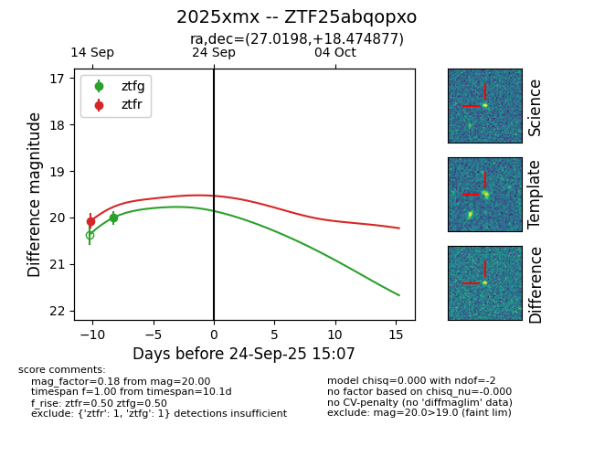
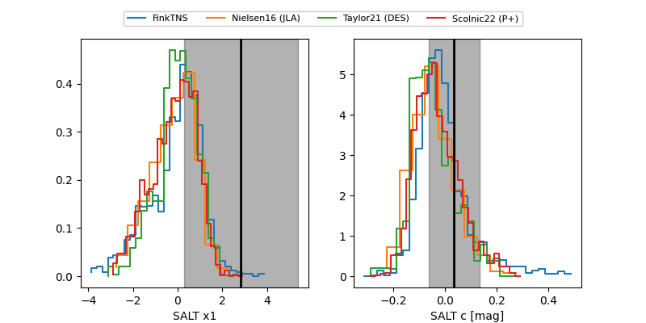

FINK: ZTF25abqopxo
Lasair: ZTF25abqopxo
ALeRCE: ZTF25abqopxo
TNS: 2025xmx
YSE: 2025xmx
ZTF25abqopxo (ztf,fink)
2025xmx (tns,yse)
equatorial (ra, dec) = (27.0198,+18.47488)
galactic (l, b) = (141.2373,-42.37465)


last ztfg=20.00, ztfr=20.07
1 ztfg, 1 ztfr detections